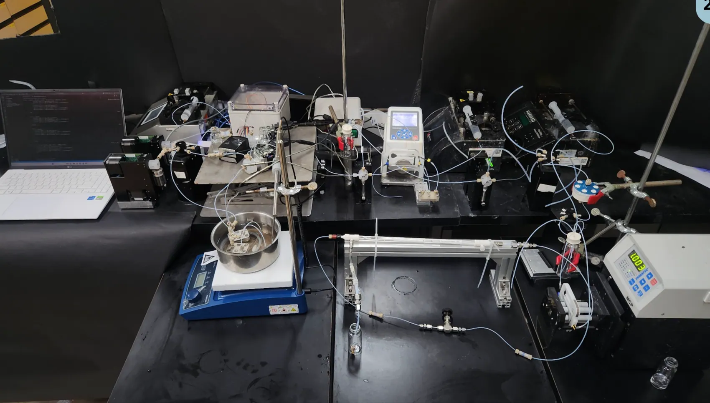

Our Mission
Develop sustainable and intelligent bioengineering systems by integrating biological sciences, engineering, microfluidics and computational approaches.
Research at the interface of biotechnology, engineering and computational intelligence.

Sustainable and Intelligent Bioengineering Systems (SIBES) is an independent academic research group led by Dr. Vikas Sharma at the School of Biosciences and Technology, VIT-AP University, Amaravati, India.
The group explores how biological systems, microfluidics, process engineering and computational methods can be integrated to create practical, efficient, scalable and sustainable technologies.
Our work spans integrated continuous bioprocessing, microfluidic synthesis and purification, intelligent process monitoring, biochip design, simulation and miniaturized analytical devices. Research directions include nucleic acid therapeutics, diagnostics, biosensing and translational biomanufacturing.
Two interconnected themes draw on a common foundation in biology, engineering and computation.
Develop sustainable and intelligent bioengineering systems by integrating biological sciences, engineering, microfluidics and computational approaches.
Advance integrated, autonomous and sustainable technologies while fostering interdisciplinary research and responsible translation.
Integration, intelligence, sustainability and translation guide our approach to platform design and application.